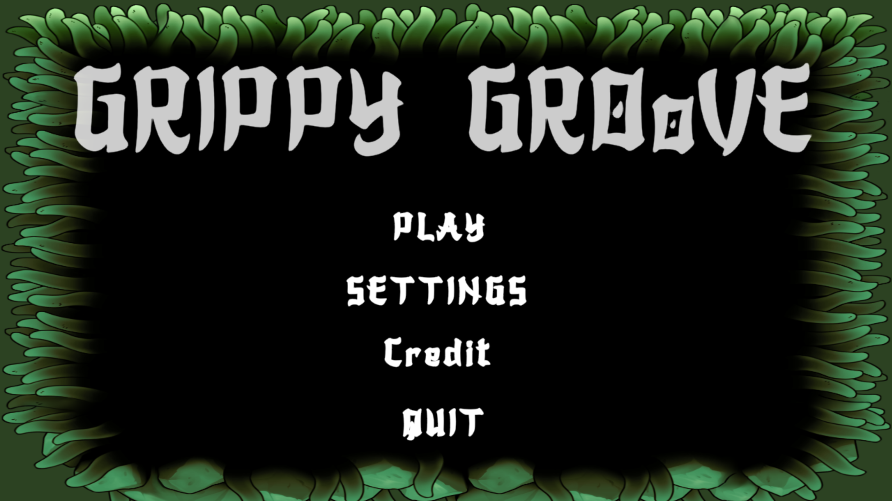
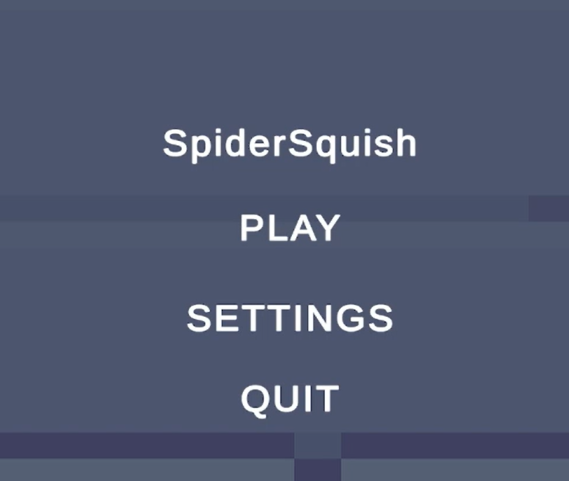
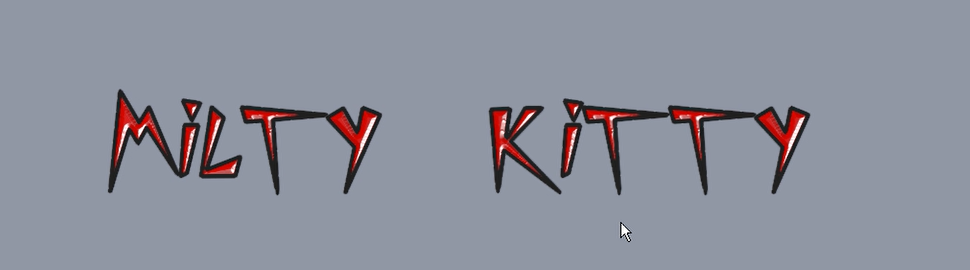
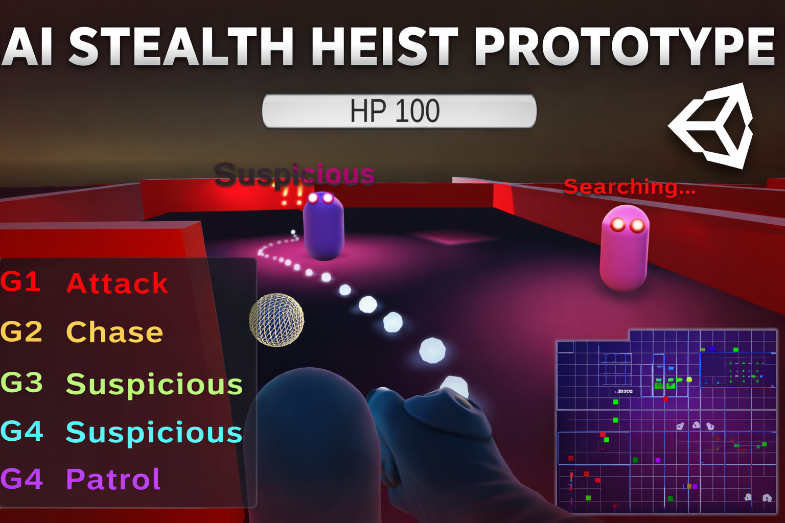
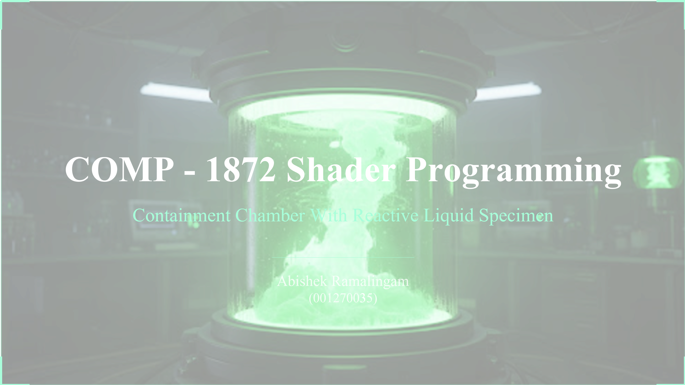
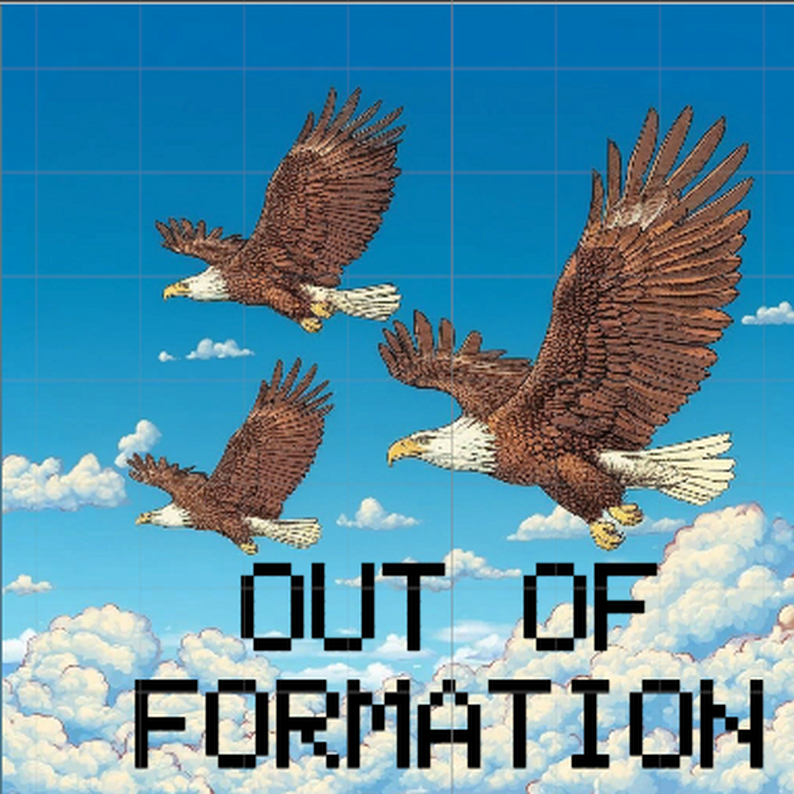

Projects
Game Projects

LumberJill: The RPG
Build, Craft, Care. A cozy woodworking RPG where every tree and trade matters.
View More

GrippyGroove
Swing, fight, escape. A physics-driven grappling platformer with enemies and puzzles.
View More
SpiderSquish
Dash to defeat. A top-down 2D Unity project built with OOP and modular systems.
View More
Technical Projects

AI Stealth Heist Prototype
Multi-guard stealth AI. FSM perception, alerts, and coordinated guard behaviour.
View More
Reactive Containment Chamber
Real-time Unreal shader showcase. A sci-fi containment scene with reactive liquid, translucent glass, pulsing specimen effects, cable animation, floor circuits, Niagara smoke, and a CCTV-style post-process view.
View More
WeatherSys
Real-time weather system. An Unreal Engine 5.4 C++ plugin using OpenWeather API data to control lighting, fog, clouds, rain, and snow.
View MoreGame Jams and Experiments

Out of Formation
Stay with the group. A keyboard-only Micro Jam prototype built around isolation, formation, and a distance-based fail meter.
View More
Boat In A Bottle
Do not touch the glass. A 48-hour Small Boats jam prototype about assembling a boat inside a floating bottle.
View More
Colosseum Ascendant
Fight for the mask. A Global Game Jam 2026 2.5D arena side-scroller with weapons, abilities, bosses, and mask fragments.
View More